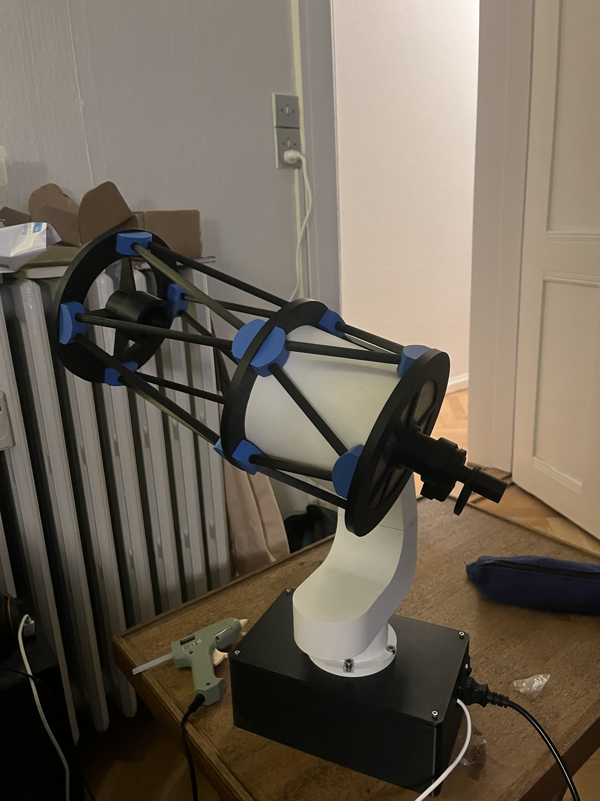
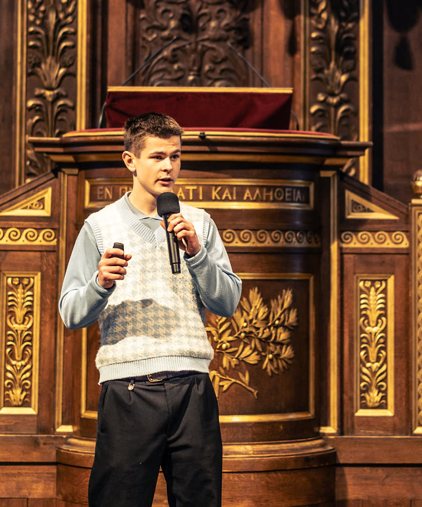
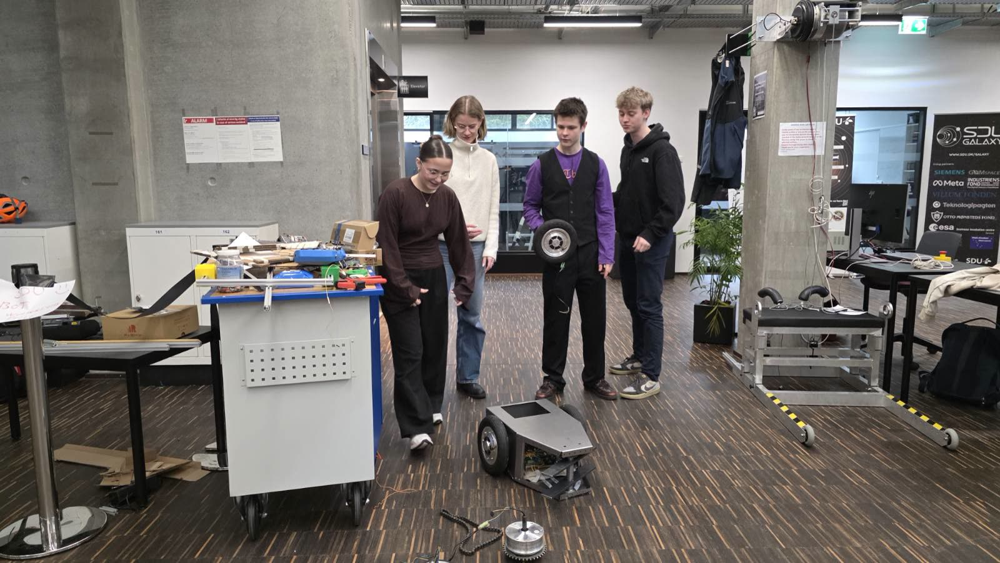
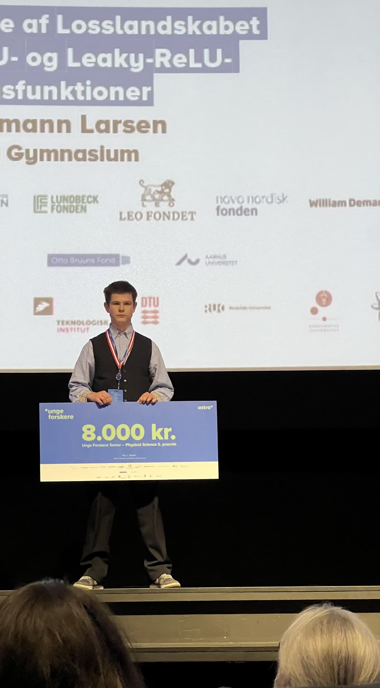
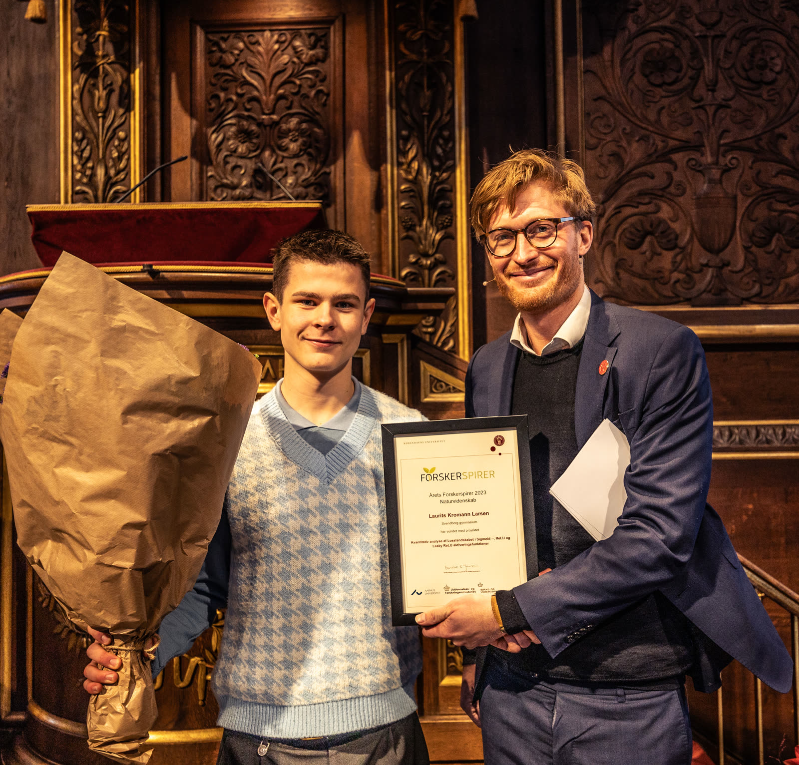
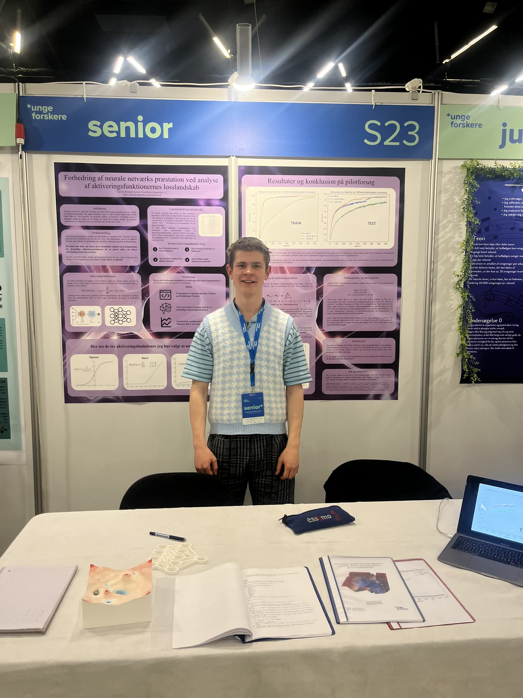
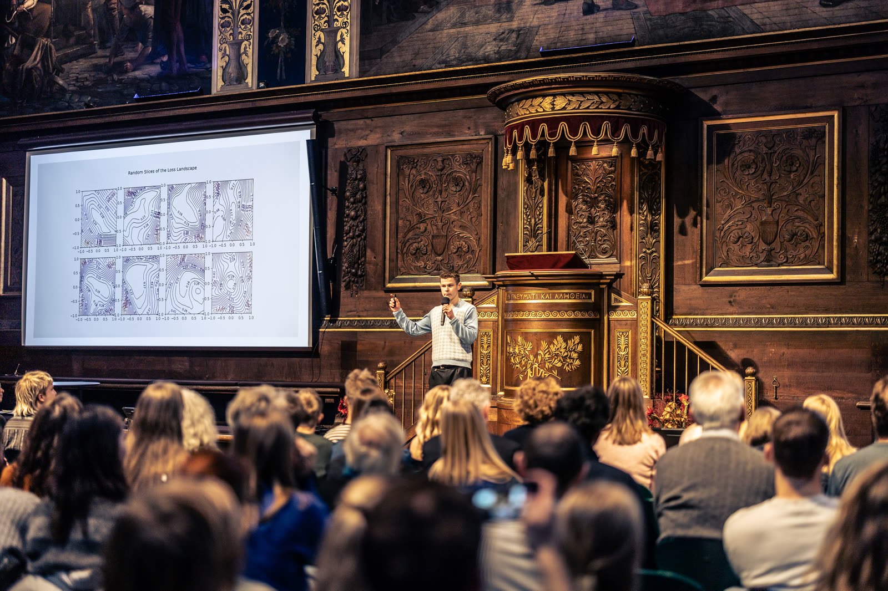
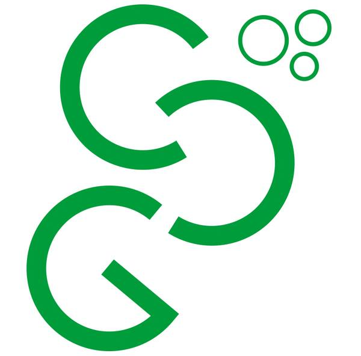
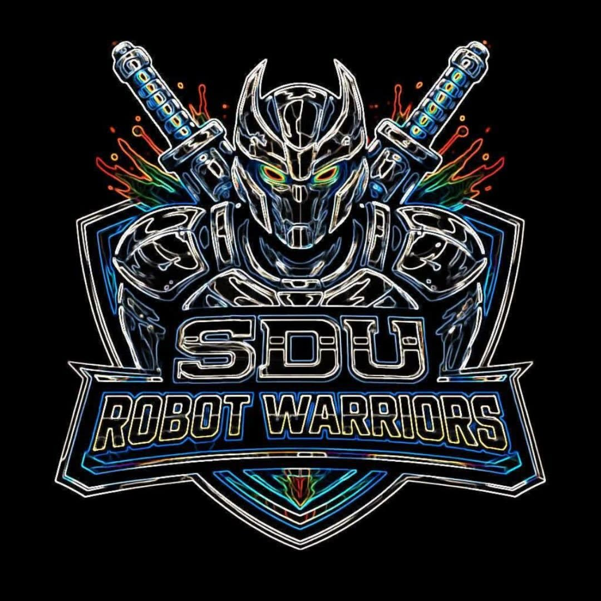
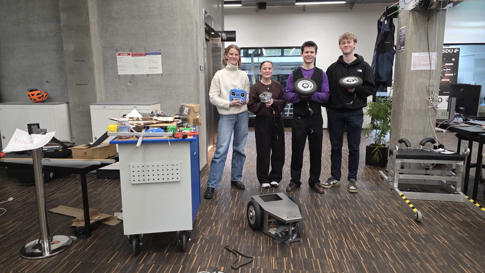

Civilingeniørstuderende
Laurits Kromann Larsen
Robotteknologi · Kunstig intelligens · Rumforskning
Jeg er en dedikeret og kreativ ingeniørstuderende med flere års erfaring fra projekter og forskningsarbejde inden for naturfag, kunstig intelligens og robotteknologi. Jeg brænder for at designe, programmere og udvikle løsninger, der omsætter idéer til praksis — og for at gøre komplekse teknologier tilgængelige og forståelige.

01 — En rejse i teknik & forskning
Udvalgte højdepunkter






02 — Karriere & engagement
Erfaring
2025 — nu
Studiehjælper — robotteleskop
Aarhus Universitet
Udvikling af en robotteleskopmodel af FUT-teleskopet for Aarhus Universitet. Arbejdet kombinerer mekanisk design, elektronik og styring til en demonstrerbar model, der bruges til formidling og undervisning.
2025 — nu
aug 2025 — nu
Medstifter, bestyrelsesmedlem & aktivt medlem
Unge Formidlere (UVF)
Medstifter af Unge Formidlere — en national forening hvor unge formidler videnskab og teknologi til andre unge. Jeg sidder i bestyrelsen og er aktivt medlem i organisationens daglige arbejde.
2025 — nu

Team Leader & medstifterStudieklub ved SDU's DreamLab, der bygger en kamprobot til Robonexus i Saudi-Arabien. Jeg har været med fra start og har bidraget gennem hele projektet — mekanisk design, elektronik, programmering og projektledelse. Læs mere på SDU →
2022 — 2024
Designer
3D Actions
3D-design og produktudvikling.
03 — Hvad jeg bygger
Udvalgte projekter
2025 · Aarhus Universitet
Robotteleskop — FUT-model
Udvikling af en motoriseret model af FUT-teleskopet styret af en Raspberry Pi. Bruges til formidling og som platform for videre udvidelser af teleskop-modellen.
2025
Robotteleskop i bevægelse
Demonstration af robotteleskop-modellen, der scanner himlen via styrede steppermotorer drevet af en Raspberry Pi.
2025
Ball on plate — PID-regulering
Et system, der balancerer en bold på en plade ved hjælp af computer vision, PID-regulering og steppermotorer styret af en Raspberry Pi. Sideprojekt fra før studiestart på SDU.
2025 — nu · SDU
SDU Robot Warriors — kamprobot
Som team leader og medstifter er jeg med til at designe, programmere og bygge en kamprobot til Robonexus 2026 i Saudi-Arabien. Projektet dækker mekanik, elektronik, software og holdledelse.

2025 — nu · SDU
Konstruktion & elektronik — kamprobot
Detaljer fra opbygningen af kamprobotten — chassis, drivlinje og styreelektronik. Iteration på iteration mellem CAD, 3D-print og testkørsler.
2023
Forskningsprojekt — Losslandskaber i neurale netværk
Kvantitativ analyse af losslandskabet i neurale netværk med Sigmoid-, ReLU- og Leaky-ReLU-aktiveringsfunktioner. Præsenteret bl.a. ved Unge Forskere Senior 2024 og Projekt Forskerspirer.
04 — Anerkendelse
Priser
- 2024Naturfagslegatet — Svendborg Gymnasium
- 2024Unge Forskere Senior — 3.-plads, Physical Science
- 2023Projekt Forskerspirer — 1. præmie, naturfag
05 — Formidling
Foredrag & konferencer
- 2025Space-konferencen Aalborg — planlagt poster & demonstration af robotteleskop og udvidet FUT-model
- 2025ADAM-konferencen — posterfremlæggelse af robotteleskop
- 2024Unge Forskere Senior, finale — København
- 2023Projekt Forskerspirer — fremlæggelse, København
06 — Akademisk baggrund
Uddannelse
Bachelor — civilingeniør i robotteknologi
Syddansk Universitet
2025 — nu
Robotteknologi med fokus på mekanik, software, kontrolteori og kunstig intelligens. Nuværende karaktersnit: 12,0.
STX — Matematik / Fysik / Kemi
Svendborg Gymnasium
2022 — 2024
Snit på 11,5. Modtog Naturfagslegatet 2024. Gennemførte ni sciencecamps ved Sciencetalenter i Sorø samt ATU (Akademiet for Talentfulde Unge).
07 — Sig hej
Kontakt
Jeg er altid interesseret i at tale med andre, der arbejder med robotteknologi, AI, rumforskning eller science-formidling.
Telefon
LinkedIn
Beliggenhed
Odense, Danmark